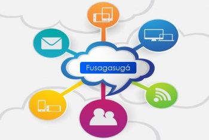

La Administración Municipal a través de la Oficina TIC implemento en el año 2014 seis (6) zonas Wifi, dotadas de infraestructura para proporcionar servicio de Internet gratuito en espacios abiertos; zonas Wifi, ubicadas en:
Zona Wifi Contigo Con Todo El Progreso, Comuna Norte – Puesto de Salud del Barrio el Progreso
Zona Wifi Contigo Con Todo Plaza de Mercado, Comuna Centro – Avenida las Palmas entre carrera 11 y 12 Barrio Luxemburgo.
Zona Wifi Contigo Con Todo Eben Ezer, Comuna Suroccidental - Manzana J etapa 3, Barrio Ciudad Eben Ezer
Zona Wifi Contigo Con Todo Parque Principal, Comuna Centro - Calle 6 No. 6-24 Barrio Centro
Zona Wifi Contigo Con Todo Coburgo, Comuna Oriental - Parque Barrio Coburgo.
Zona Wifi Contigo Con Todo Estadio Municipal, Comuna Suroriental - Estadio Municipal Fernando Mazuera Villegas, Carrera 6 entre calles 16ª Y 17 Barrio Balmoral
El Municipio de Fusagasugá cuenta con cuatro (4) Puntos Vive Digital, sitios dotados de infraestructura técnica (bienes comprendidos en equipos tanto en hardware como en software, señalización, cableado estructurado y mobiliario), para que los usuarios accedan de manera GRATUITA a las TIC, capacitarse en contenidos virtuales, tener alternativas sanas de entretenimiento y participar en la multiplicación de estos conocimientos mediante la creación de comunidades virtuales e implementando procesos de inclusión y alfabetización digital para disminuir la brecha digital. En cada Punto encuentran un sin número de ofertas para inscripción en la diversidad de cursos de manera continua. Algunos de estos cursos se encuentran en convenio con el SENA.
PVD Fase 0, Biblioteca - Transversal 9 No. 14-91 Piso 1 y 2
PVD Fase 0, Llano Largo - Carrera 68 con calle 18 esquina, Barrio Llano Largo, Unidad Educativa Municipal Hernando Cárdenas
PVD Fase 1, El Progreso - Calle 3B No. 6-13, Barrio El Progreso
PVD Plus - Calle 1 No. 14B-20, Barrio Gaitán II Etapa, Institución Educativa Municipal Manuel Humberto Cárdenas Vélez
La Alcaldía de Fusagasugá dando cumplimiento a la ley 962 de 2005, tiene aprobado por el Departamento Administrativo de la Función Pública (DAFP) setenta y cuatro (74) trámites y servicios, los cuales se encuentran publicados en el Sistema Único de Información de Tramites (SUIT). Puedes ver los trámites y servicios en el siguiente enlace.
Estos tramites estan disopnibles en elportal web de la Administración municipalDe igual manera, el municipio de Fusagasugá ha desarrollado por medio de la Oficina TIC una serie de plataformas por medio de las cuales la comunidd podrá beneficiarce en diferentes formas, según la necesidad.
Las plataformas son:
En cumplimiento a la Ley de Transparencia y Acceso a la Información Público, Ley 1712 de 2014, la Alcaldía de Fusagasugá a través de la Oficina TIC desarrolló Datos Abiertos, con el fin de garantizar el derecho de acceso a la información pública por parte de la ciudadanía. Visita la
páginaLa Alcaldía de Fusagasugá a través de la Oficina TIC ha desarrollado Tramites y Servicios en línea (TyS Online) es una plataforma web que permite a los ciudadanos de Fusagasugá realizar los trámites y servicios más comunes de la Alcaldía, mejorando la calidad de vida de la comunidad, evitando desplazamientos a la administración municipal mediante acceso a información (formatos, requisitos, otros) optimizando los procesos que ejecutan los funcionarios. Visita la
plataforma webEl observatorio TIC es un espacio en el cual la ciudadanía en general puede indagar el impacto social que tienen los avances en temas TIC que el municipio de Fusagasugá a través de la Oficina TIC ha realizado desde su creación
Conoce las estadisticas de cnectividad del municipio de Fusagasugá por medio del siguiente
enlaceLa Alcaldía de Fusagasugá mediante Acuerdo No. 044 de 2012, creo la política pública de Tecnologías de la Información y las Comunicaciones (TICS), donde la Oficina TIC viene desarrollando proyectos de innovación que permitan garantizar el cumplimiento de la misma. Conoce más de las cuatro (4) estrategias de la política en el
enlacebasadas en el
Acuerdo No. 044 de 2012La Oficina TIC de la Alcaldía de Fusagasugá, ha generado como estrategia un café donde se invita a los funcionarios para dar a conocer temas relacionados con gobierno electrónico (e-govermment), divulgación y apropiación de la estrategia de Gobierno en Línea (GEL) en la administración municipal, para lo cual se desarrolló una actividad de trabajo colaborativo empleando el modelo Business Canvas.
La participación del municipio de Fusagasugá en el cumplimiento del objetivo de Gobierno En Línea, a realizado avances importantes como lo es la creación de dos portales interactivos, en los que el ciudadano podrá conocer y realizar consultas de interés particular. Uno de estos sitios es página oficial del municipio y la página de la Oficina TIC.
Si quieres conocer más de la estrategia de Gobierno en Línea, vé al siguiente enlace
El Marco de Referencia de MinTIC, es el principal instrumento para implementar la Arquitectura TI de Colombia y habilitar la Estrategia de Gobierno en línea. Con él se busca habilitar las estrategias de TIC para servicios, TIC para la gestión, TIC para el gobierno abierto y para la Seguridad y la privacidad. La Oficina TIC desde el año 2014 inició con el perfilamiento de TI como estrategia de inicio para implementar la Arquitectura TI en la Alcaldía de Fusagasugá.
La Oficina TIC de la Alcaldía de Fusagasugá desarrollo la plataforma de EduTic, que tiene como objetivo utilizar la Tecnologías de la Información y Comunicaciones proporcionando a la comunidad educativa una herramienta que permite a los docentes y estudiantes apoyar el desarrollo de las actividades académicas. En la actualidad cuenta con dos (2) Ingenieros en temas de apropiación e implementación en cada Institución Educativa Municipal de la plataforma Edutic.
Actualmente la plataforma se encuentra en funcionamiento en uno de las Instituciones Educativas Municipales y es accesible mediante el siguiente enlace
Tiene como objetivo utilizar la Tecnologías de la Información y Comunicaciones proporcionando a la comunidad educativa con aproximadamente 59.690 recursos digitales que pueden ser utilizados en Tablet, equipos de cómputo y otros equipos, para facilitar los procesos de aprendizaje.
Que esperar para ser parte de la innovación educativa, ingresa y usa los recursos digitales